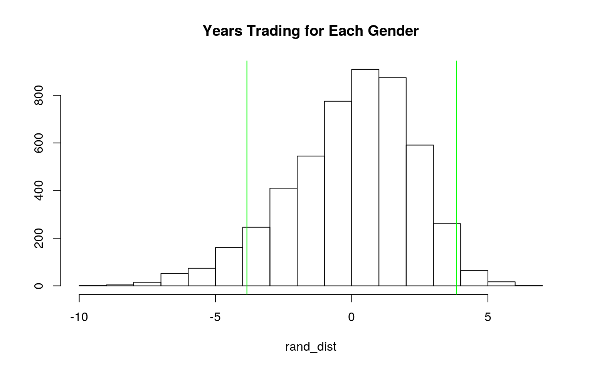

December 2, 2020
0. (5 pts) Introduction
While not the biggest fan of trading sports cards myself, I definitely come from a family of people that were avid collectors of baseball, football, and basketball cards. The money and fanatacism behind these cards is incredible and can be very lucrative for some owners. This dataset decided to measure if the value of these collectible cards increased due to ownership. This was done by randomly selecting 148 total traders at a trading card show. Some of the variables are age of the participant (age), whether the trader was a card dealer or not (dealer), the number of trades per month done by the trader (trades_pm), the number of years that the trader had been involved in trading (years), which income group the trader fell in based on 8 different levels (income), what gender the trader was(gender), and their highest level of education based on 6 different levels (education). This particular study had randomly given its participants one of two different collectables, either good A or good B (shown in the variable "good"). The variable "trade"" measures whether or not the trader decided to trade the good given to them for the other one. This dataset was derived from Stock and Watson (2007).
SportsCards <- read.csv("SportsCards.csv")
head(SportsCards)## X good dealer permonth years income gender education age trade
## 1 1 B yes 70 12 [50, 75) male post-high school 37 yes
## 2 2 B yes 40 2 [40, 50) male 4y college 40 yes
## 3 3 B yes 35 10 [75, 100) male 4y college 29 no
## 4 4 A yes 33 3 [40, 50) male post-high school 42 yes
## 5 5 A yes 32 10 [30, 40) male 2y college 25 no
## 6 6 A yes 30 10 [20, 30) male graduate school 24 yescolnames(SportsCards) <- c("participant", "good", "dealer", "trades_pm",
"years", "income", "gender", "education", "age", "trade")
head(SportsCards)## participant good dealer trades_pm years income gender education age trade
## 1 1 B yes 70 12 [50, 75) male post-high school 37 yes
## 2 2 B yes 40 2 [40, 50) male 4y college 40 yes
## 3 3 B yes 35 10 [75, 100) male 4y college 29 no
## 4 4 A yes 33 3 [40, 50) male post-high school 42 yes
## 5 5 A yes 32 10 [30, 40) male 2y college 25 no
## 6 6 A yes 30 10 [20, 30) male graduate school 24 yesglimpse(SportsCards)## Rows: 148
## Columns: 10
## $ participant <int> 1, 2, 3, 4, 5, 6, 7, 8, 9, 10, 11, 12, 13, 14, 15, 16, 17, 18, 19, 20, 21, 22…
## $ good <fct> B, B, B, A, A, A, A, B, B, B, B, A, A, A, A, B, B, B, B, B, B, B, A, B, B, A,…
## $ dealer <fct> yes, yes, yes, yes, yes, yes, yes, yes, yes, yes, yes, yes, yes, yes, yes, ye…
## $ trades_pm <int> 70, 40, 35, 33, 32, 30, 30, 30, 30, 25, 25, 23, 21, 20, 20, 20, 20, 20, 20, 2…
## $ years <dbl> 12, 2, 10, 3, 10, 10, 10, 10, 3, 18, 10, 10, 31, 6, 10, 20, 14, 10, 15, 20, 1…
## $ income <fct> "[50, 75)", "[40, 50)", "[75, 100)", "[40, 50)", "[30, 40)", "[20, 30)", "[30…
## $ gender <fct> male, male, male, male, male, male, male, male, male, male, male, male, male,…
## $ education <fct> post-high school, 4y college, 4y college, post-high school, 2y college, gradu…
## $ age <int> 37, 40, 29, 42, 25, 24, 50, 36, 51, 37, 32, 48, 55, 50, 59, 39, 19, 32, 29, 4…
## $ trade <fct> yes, yes, no, yes, no, yes, no, yes, no, no, yes, yes, no, no, no, yes, yes, …1. (15 pts) MANOVA
A one-way MANOVA was conducted to see the impacts of different levels of education on 3 numeric variables (age, trades made per month, and years trading). Our null hypothesis was that there was no difference between the mean of these variables based on education level, with our alternative stating that there was a difference. An mshapiro test was done to assess the multivariate homogeneity, under which the assumption was violated. Due to this violation, no examination of covariance matrices for each group was conducted. No univariate or multivariate outliers were evident, and running a MANOVA was considered an appropriate test to run for analysis. Significant differences were found among the 6 different levels of education for at least one of the numeric variables, Pillai trace = 0.24, pseudo F = 2.48, p = 0.00167. Univariate ANOVAs for each variable were then ran to follow up the results of the MANOVA, using the Bonferroni method to control Type 1 error rates used for these comparisons. Here we found that the univariate ANOVA for age was significant, F = 6.67, p<.0001. No type 1 error probability was calculated due to adjusted the significance level. Post hoc analysis was then done to check pairwise comparisons to see which of the education levels differed in their mean age. After adjusting for multiple comparisons (bonferroni alpha = 0.05/19 = .003), only those with no more than an 8th grade level of education differed significantly in terms of age. 19 tests were conducted in total, including 1 MANOVA, 3 ANOVAs, and 15 t tests.
# H0: For trades made per month, number of years trading, and
# age of the trader, there is no difference based on
# education. HA: For at least one of the numeric variables,
# at least one level of educations mean is different.
man1 <- manova(cbind(trades_pm, years, age) ~ education, data = SportsCards)
# MANOVA
summary(man1)## Df Pillai approx F num Df den Df Pr(>F)
## education 5 0.24079 2.4784 15 426 0.001665 **
## Residuals 142
## ---
## Signif. codes: 0 '***' 0.001 '**' 0.01 '*' 0.05 '.' 0.1 ' ' 1# is significant - have to run univariate ANOVA and post-hoc
# t test
# univariate ANOVAs from MANOVA object
summary.aov(man1)## Response trades_pm :
## Df Sum Sq Mean Sq F value Pr(>F)
## education 5 147.6 29.512 0.2822 0.9223
## Residuals 142 14851.7 104.589
##
## Response years :
## Df Sum Sq Mean Sq F value Pr(>F)
## education 5 279.9 55.976 0.804 0.5486
## Residuals 142 9886.0 69.620
##
## Response age :
## Df Sum Sq Mean Sq F value Pr(>F)
## education 5 4739.4 947.88 6.6718 1.303e-05 ***
## Residuals 142 20174.3 142.07
## ---
## Signif. codes: 0 '***' 0.001 '**' 0.01 '*' 0.05 '.' 0.1 ' ' 1# for age, at least one education level is different
SportsCards %>% group_by(education) %>% summarize(mean(age))## # A tibble: 6 x 2
## education `mean(age)`
## <fct> <dbl>
## 1 2y college 36.2
## 2 4y college 37.7
## 3 8th grade 15.8
## 4 graduate school 38
## 5 high school 30.1
## 6 post-high school 38.7# postHOC t-test for age
pairwise.t.test(SportsCards$age, SportsCards$education, p.adj = "none")##
## Pairwise comparisons using t tests with pooled SD
##
## data: SportsCards$age and SportsCards$education
##
## 2y college 4y college 8th grade graduate school high school
## 4y college 0.6784 - - - -
## 8th grade 6.6e-05 8.9e-06 - - -
## graduate school 0.6570 0.9322 2.5e-05 - -
## high school 0.0643 0.0111 0.0025 0.0249 -
## post-high school 0.4646 0.7392 2.2e-06 0.8469 0.0023
##
## P value adjustment method: none# did 1 MANOVA, 3 ANOVAs, and 15 t tests (10 tests)
0.05/19## [1] 0.002631579# 0.003 adjusted significance level
library(rstatix)
# assessing assumptions
education <- SportsCards$education
DVs <- SportsCards %>% select(trades_pm, years)
# test multivariate normality for each group
sapply(split(DVs, education), mshapiro_test)## 2y college 4y college 8th grade graduate school high school post-high school
## statistic 0.676906 0.8994731 0.8632852 0.7517688 0.8971048 0.7470322
## p.value 2.065674e-05 0.00951655 0.1294488 0.000475737 0.00245148 1.317002e-06# assumption is violated2. (10 pts) Randomization Test
We decided to run a randomization test looking at the mean difference in the number of years trading between men and women. My null hypothesis was that the mean number of years trading was the same for both genders, while my alternative hypothesis was that the mean number of years trading was different between the genders. We found a test statistic of 3.845, which in our context meannt that males had 3.845 more years trading on average than females. This was our observed difference that was used as our test statistic. A Monte Carlo sample was taken for 5000 random permutations. Taking the mean of the vector used to store these randomization, I was unable to reject the null hypothesis. Our probability of getting a mean difference this extreme if there really was not a difference between the genders and the mean years they've been trading was 0.084, meaning that we fail reject the null. This evidence suggests that there was no difference in the mean number of years trading between men and women. A t-test was also ran to confirm this assumptiont (t= -2.9259, df = 29.63, p-value = 0.006532). Below is as plot of the null distribution and the test statistic.
# H0: mean number of years trading is the same for men as it
# is for women. HA: mean number of years trading is diffrent
# for men and women.
ggplot(SportsCards, aes(years, fill = gender)) + geom_histogram(bins = 5) +
facet_wrap(~gender, ncol = 2)SportsCards %>% group_by(gender) %>% summarize(mean_years = mean(years)) %>%
summarize(diff(mean_years))## # A tibble: 1 x 1
## `diff(mean_years)`
## <dbl>
## 1 3.85rand_dist <- vector()
for (i in 1:5000) {
new <- data.frame(years = sample(SportsCards$years), gender = SportsCards$gender)
rand_dist[i] <- mean(new[new$gender == "male", ]$years) -
mean(new[new$gender == "female", ]$years)
}
mean(rand_dist)## [1] -0.02548411{
hist(rand_dist, main = "Years Trading for Each Gender", ylab = "")
abline(v = c(-3.845, 3.845), col = "green")
}
# pvalue: fail to reject the null
mean(rand_dist > 3.845 | rand_dist < -3.845)## [1] 0.0888# independent-samples t test for comparison
t.test(data = SportsCards, years ~ gender)##
## Welch Two Sample t-test
##
## data: years by gender
## t = -2.9259, df = 29.63, p-value = 0.006532
## alternative hypothesis: true difference in means is not equal to 0
## 95 percent confidence interval:
## -6.530381 -1.159845
## sample estimates:
## mean in group female mean in group male
## 5.200000 9.0451133. (35 pts) Linear Regression Model
We decided to test if the effect of age on trades made per month differed depending whether or not the participant was a card dealer. Our null hypothesis was that there was no difference in the effect that age would have on trades per month for dealers and non-dealers. Our alternative hypthesis was that there was a difference. We mean centered the age of the participants at the card trading show. The intercept of 5.665 was the mean/predicted trades per month made for non-dealers of average age. For people of average age, dealers had an average/predicted trades per month that was 9.161 times greater than for non-dealers. (b = 9.161, t = 6.306, p = 3.30e-09). Age was associated with trades per month, as for every 1 unit increase in age, the predicted trades per month went down by 0.193. The slope of age on trades per month for card dealers was 0.297 greater than for non-dealers. Below is a plot of this regression, with the vertical lines being 0(dashed) and the mean age (solid). The horizontal lines correspond to whether the participant was a dealer or not. The assumptions for linearity, homoskedasticity, and normality were assessed using hypothesis testing and graphing. Homoskedasticity looked fine for the model, which was assessed using the Breusch-Pagan test (BP = 5.2816, df = 3, p-value = 0.1523). According to the residuals graph, linearity also looked good. The model did not pass normality, however. Using the Wilke-Shapiro test, our model was found to be non-normal (W = 0.85829, p-value = 1.28e-10). Due to being non-normal, boot-strapped standard errors would need to be calculated to adjust for this. Although our model did not violate the homoskedasticity assumption, we still calculated robust standard errors. After adjusting the standard errors, I did not observe much change between the corrected and non-corrected standard errors, except for the intercept, which decreased. This meant that there was a significant decrease in variation. All of our values are significant, even after making the standard errors robust to violations of homoskedasticity. Using the adjusted R^2 value, 23.47% of the variation in the outcome is explained by our model. This value was used instead of the regular R^2 because it had penalties for each of my explanatory variables. Even after adjustment, there was not much difference between the adjusted and non-adjusted R^2 value.
# Does the effect of age on trades per month differ whether
# or not you're a dealer?
SportsCards$age_c <- SportsCards$age - mean(SportsCards$age)
fit <- lm(trades_pm ~ dealer * age_c, data = SportsCards)
summary(fit)##
## Call:
## lm(formula = trades_pm ~ dealer * age_c, data = SportsCards)
##
## Residuals:
## Min 1Q Median 3Q Max
## -14.858 -4.797 -1.220 3.203 54.933
##
## Coefficients:
## Estimate Std. Error t value Pr(>|t|)
## (Intercept) 5.66476 1.02723 5.515 1.57e-07 ***
## dealeryes 9.16097 1.45272 6.306 3.30e-09 ***
## age_c -0.19250 0.07353 -2.618 0.00979 **
## dealeryes:age_c 0.29678 0.11342 2.617 0.00983 **
## ---
## Signif. codes: 0 '***' 0.001 '**' 0.01 '*' 0.05 '.' 0.1 ' ' 1
##
## Residual standard error: 8.837 on 144 degrees of freedom
## Multiple R-squared: 0.2504, Adjusted R-squared: 0.2347
## F-statistic: 16.03 on 3 and 144 DF, p-value: 4.798e-09ggplot(SportsCards, aes(age_c, trades_pm, color = dealer)) +
geom_smooth(method = "lm", se = F, fullrange = T) + geom_point() +
geom_vline(xintercept = 0, lty = 2) + geom_vline(xintercept = mean(SportsCards$age))
anova(fit)## Analysis of Variance Table
##
## Response: trades_pm
## Df Sum Sq Mean Sq F value Pr(>F)
## dealer 1 3106.0 3105.97 39.7770 3.291e-09 ***
## age_c 1 114.5 114.46 1.4658 0.227992
## dealer:age_c 1 534.6 534.64 6.8469 0.009827 **
## Residuals 144 11244.2 78.08
## ---
## Signif. codes: 0 '***' 0.001 '**' 0.01 '*' 0.05 '.' 0.1 ' ' 1library(lmtest)
library(sandwich)
# testing assumptions
resids <- fit$residuals
fitvals <- fit$fitted.values
# homoskedsaticity and linearity
ggplot() + geom_point(aes(fitvals, resids)) + geom_hline(yintercept = 0,
color = "red")par(mfrow = c(1, 2))
hist(resids)
qqnorm(resids)
qqline(resids, col = "red")# test normality (non-normal)
shapiro.test(resids)##
## Shapiro-Wilk normality test
##
## data: resids
## W = 0.85829, p-value = 1.28e-10# test homoskedasticity (passes assumption)
bptest(fit)##
## studentized Breusch-Pagan test
##
## data: fit
## BP = 5.2816, df = 3, p-value = 0.1523# corrected SE
coeftest(fit, vcov. = vcovHC(fit))[, 1:2]## Estimate Std. Error
## (Intercept) 5.6647636 0.70039305
## dealeryes 9.1609699 1.46865151
## age_c -0.1925046 0.06866207
## dealeryes:age_c 0.2967798 0.10068678# uncorrected SE
summary(fit)$coef[, 1:2]## Estimate Std. Error
## (Intercept) 5.6647636 1.02722826
## dealeryes 9.1609699 1.45272026
## age_c -0.1925046 0.07352703
## dealeryes:age_c 0.2967798 0.11341959coeftest(fit, vcov = vcovHC(fit, type = "HC1"))##
## t test of coefficients:
##
## Estimate Std. Error t value Pr(>|t|)
## (Intercept) 5.664764 0.682515 8.2998 6.860e-14 ***
## dealeryes 9.160970 1.453173 6.3041 3.337e-09 ***
## age_c -0.192505 0.066165 -2.9095 0.004195 **
## dealeryes:age_c 0.296780 0.097854 3.0329 0.002874 **
## ---
## Signif. codes: 0 '***' 0.001 '**' 0.01 '*' 0.05 '.' 0.1 ' ' 14. (5 pts) Bootstrapping Standard Errors
Taking a bootstrapped sample meant that we randomly sampled rows from the dataset with replacment. Due to our model failing the normality assumption, these were the standard errors we would use in order to not violate this assumption. Our bootstrapped standard errors were similar in value to our original and robust standard errors, more so to the latter. This meant that any changes in p-values would not be drastically different from the ones that were calculated with the robust standard errors.
boot_data <- sample_frac(SportsCards, replace = T)
samp_distn <- replicate(5000, {
boot_data <- sample_frac(SportsCards, replace = T)
fit2 <- lm(trades_pm ~ dealer * age_c, data = boot_data)
coef(fit2)
})
samp_distn %>% t %>% as.data.frame %>% summarize_all(sd)## (Intercept) dealeryes age_c dealeryes:age_c
## 1 0.6855672 1.454364 0.06688847 0.09915441samp_distn %>% t %>% as.data.frame %>% summarize_all(mean)## (Intercept) dealeryes age_c dealeryes:age_c
## 1 5.636686 9.174168 -0.1912577 0.29781275. (25 pts) Logistic Regression Model
I created a binary categorical variable (y) by converting whether or not the participant made the trade for the rare sports item, with "yes" being equal to 1. Controlling for years trading, there is not a significant difference between 2 years of college and any of the other education levels. Controlling for years trading, graduate school has an odds of making the trade that is 0.459 times that of 2 years of college. 4 years of college has an odds of making the trade that is 1.198 times that of 2 year colleges. High school education has an odds of making the trade that is 0.407 times that 2 year college. 8th grade has an odds of making the trade that is 1.456 times that 2 year college. Having some post-high school has an odds of making the trade that is 0.797 times that of 2 year college. Controlling for education level, for every 1 unit increase in years trading, odds of making the trade for the sports memorabilia changes by a factor of e^-.006 = 0.994 (they increase by 99.4%). This is not statistically significant. Controlling for both variables, our log odds of making the trade are 0.711 (71.1%). A confusion matrix is located below in the coding, along with the density plot of the log odds. The probability of predicting yes for a participant that actually made the trade is 0.02 (TPR). The probability of predicting no for a participant that did not make the trade is 0.97 (TNR). The proportion of people classified as making the trade that actually did is 0.25 (PPV). The accuracy of this model is 0.65. The AUC of the model when calculated using the class_diags function was 0.62, which means that our model did a poor job of quantifying how well we were predicting. When the AUC was calculated from the ROC curve, we did get a different value, this time of 0.77. This means that the ROC curve that was calculated did a fair, almost good job at properly quantifying its prediction of who did and did not make the trade for the rare item.
class_diag <- function(probs, truth) {
# CONFUSION MATRIX: CALCULATE ACCURACY, TPR, TNR, PPV
tab <- table(factor(probs > 0.5, levels = c("FALSE", "TRUE")),
truth)
acc = sum(diag(tab))/sum(tab)
sens = tab[2, 2]/colSums(tab)[2]
spec = tab[1, 1]/colSums(tab)[1]
ppv = tab[2, 2]/rowSums(tab)[2]
f1 = 2 * (sens * ppv)/(sens + ppv)
if (is.numeric(truth) == FALSE & is.logical(truth) == FALSE)
truth <- as.numeric(truth) - 1
# CALCULATE EXACT AUC
ord <- order(probs, decreasing = TRUE)
probs <- probs[ord]
truth <- truth[ord]
TPR = cumsum(truth)/max(1, sum(truth))
FPR = cumsum(!truth)/max(1, sum(!truth))
dup <- c(probs[-1] >= probs[-length(probs)], FALSE)
TPR <- c(0, TPR[!dup], 1)
FPR <- c(0, FPR[!dup], 1)
n <- length(TPR)
auc <- sum(((TPR[-1] + TPR[-n])/2) * (FPR[-1] - FPR[-n]))
data.frame(acc, sens, spec, ppv, f1, auc)
}
SportsCards <- SportsCards %>% mutate(y = ifelse(trade == "yes",
1, 0))
head(SportsCards)## participant good dealer trades_pm years income gender education age trade age_c y
## 1 1 B yes 70 12 [50, 75) male post-high school 37 yes 2.310811 1
## 2 2 B yes 40 2 [40, 50) male 4y college 40 yes 5.310811 1
## 3 3 B yes 35 10 [75, 100) male 4y college 29 no -5.689189 0
## 4 4 A yes 33 3 [40, 50) male post-high school 42 yes 7.310811 1
## 5 5 A yes 32 10 [30, 40) male 2y college 25 no -9.689189 0
## 6 6 A yes 30 10 [20, 30) male graduate school 24 yes -10.689189 1logit <- function(p) log(odds(p))
fit3 <- glm(y ~ education + years, data = SportsCards, family = binomial)
coeftest(fit3)##
## z test of coefficients:
##
## Estimate Std. Error z value Pr(>|z|)
## (Intercept) -0.3410184 0.5180408 -0.6583 0.5104
## education4y college 0.1805664 0.5934182 0.3043 0.7609
## education8th grade 0.3755731 0.8492545 0.4422 0.6583
## educationgraduate school -0.7797568 0.7324777 -1.0645 0.2871
## educationhigh school -0.8993967 0.6100770 -1.4742 0.1404
## educationpost-high school -0.2275139 0.5768285 -0.3944 0.6933
## years -0.0057593 0.0220880 -0.2607 0.7943exp(coef(fit3))## (Intercept) education4y college education8th grade
## 0.7110458 1.1978957 1.4558254
## educationgraduate school educationhigh school educationpost-high school
## 0.4585175 0.4068150 0.7965114
## years
## 0.9942573newdat <- data.frame(years = rep(1:20, 1), education = rep(c("8th grade",
"high school", "2y college", "post-high school", "4y college",
"graduate school"), each = 10))
newdat <- cbind(newdat, predict(fit3, newdat, se = T, type = "response"))
ggplot(newdat, aes(years, fit, color = education)) + geom_line() +
ylab("prob") + geom_ribbon(aes(ymin = fit - se.fit, ymax = fit +
se.fit), alpha = 0.3)probs <- predict(fit3, type = "response")
table(predict = as.numeric(probs > 0.5), truth = SportsCards$y) %>%
addmargins## truth
## predict 0 1 Sum
## 0 95 49 144
## 1 3 1 4
## Sum 98 50 148class_diag(probs, SportsCards$y)## acc sens spec ppv f1 auc
## 1 0.6486486 0.02 0.9693878 0.25 0.03703704 0.6165306SportsCards$logit <- predict(fit3, type = "link")
SportsCards %>% ggplot() + geom_density(aes(logit, color = trade,
fill = trade), alpha = 0.4) + theme(legend.position = c(0.85,
0.85)) + geom_vline(xintercept = -0.75) + xlab("logit (log-odds)") +
geom_rug(aes(logit, color = trade))sens <- function(p, data = data, y = y) mean(SportsCards[SportsCards$y ==
1, ]$probs > p)
spec <- function(p, data = data, y = y) mean(SportsCards[SportsCards$y ==
0, ]$probs < p)
sensitivity <- sapply(seq(0, 1, 0.01), sens, SportsCards)
specificity <- sapply(seq(0, 1, 0.01), spec, SportsCards)
ROC1 <- data.frame(sensitivity, specificity, cutoff = seq(0,
1, 0.01))
ROC1$TPR <- sensitivity
ROC1$FPR <- 1 - specificity
library(plotROC)
ROCplot <- ggplot(SportsCards) + geom_roc(aes(d = y, m = probs),
n.cuts = 0)
ROCplotcalc_auc(ROCplot)## PANEL group AUC
## 1 1 -1 0.61653066. (25 pts) K-Fold CV and LASSO
We chose to predict the outcome of making the trade given all of the variables, not with their interaction however.
The accuracy of this model was 0.72, which is the proportion of the model actually being able to measure what it is meant to be measuring. The probability of predicting yes for a participant that actually made the trade is 0.44 (TPR). The probability of predicting no for someone who did not actually make the trade is 0.87 (TNR). The proportion of people classified as having made the trade that actually did is 0.64 (PPV). The AUC of the model is 0.77, which means that our model did a fair job at quantifying how well we were predicting. This performance was overall worse for the out of sample model compared to the in sample model. Our accuracy was 0.71, out TPR was 0.36, and our TNR was 0.89. Most notably, this model was unable to calculate the precision of the model. That means that the proportion of people classified as having made the trade that actually did cannot be calculated using this data. Our AUC increased slightly, almost enough to change the classification from fair to good. This means that this model did a fair job of quantifying how well the model was predicting, despite overall performing worse than the in sample model.
After having performed LASSO on my model, the variables that were retained were participant number and trades per month. These were considered the most predictive variables. I do not think that what number participant a trader was would have a large impact on whether or not they made the trade, but I can understand why trades per month would. If someone has a proclivity towards making trades for other cards, that may influence their decision to trade cards for sports memorabilia. The model using the LASSO variables performed worse than the logistic regression in the sample model. Our accuracy was 0.64, our TPR was 0.19, our TNR was 0.86, and this model actually calculated a precision which was 0.43. When comparing the two AUCs, we see a jump down from an estimated 0.77 to 0.70, which would mean that this model performed a worse job of quantifying how well we were predicting these outcomes.
library(glmnet)
fit4 <- glm(y ~ participant + good + dealer + trades_pm + years +
income + gender + education + age, data = SportsCards, family = "binomial")
summary(fit4)##
## Call:
## glm(formula = y ~ participant + good + dealer + trades_pm + years +
## income + gender + education + age, family = "binomial", data = SportsCards)
##
## Deviance Residuals:
## Min 1Q Median 3Q Max
## -1.7427 -0.8531 -0.4969 1.0144 2.2249
##
## Coefficients:
## Estimate Std. Error z value Pr(>|z|)
## (Intercept) 2.529e+00 2.501e+00 1.011 0.3120
## participant -2.995e-02 1.576e-02 -1.901 0.0574 .
## goodB -4.583e-01 4.827e-01 -0.949 0.3424
## dealeryes -9.047e-01 1.050e+00 -0.862 0.3889
## trades_pm 9.950e-04 3.097e-02 0.032 0.9744
## years -2.304e-02 3.255e-02 -0.708 0.4790
## income[10, 20) -3.476e-01 1.083e+00 -0.321 0.7482
## income[100, Inf) -1.611e+01 1.455e+03 -0.011 0.9912
## income[20, 30) 2.392e-02 1.025e+00 0.023 0.9814
## income[30, 40) -9.065e-01 9.813e-01 -0.924 0.3556
## income[40, 50) -3.051e-01 9.061e-01 -0.337 0.7364
## income[50, 75) -3.532e-01 9.666e-01 -0.365 0.7148
## income[75, 100) -1.179e+00 1.075e+00 -1.097 0.2728
## gendermale 1.019e+00 8.353e-01 1.220 0.2226
## education4y college 2.309e-01 6.785e-01 0.340 0.7336
## education8th grade 8.108e-02 1.179e+00 0.069 0.9452
## educationgraduate school -1.153e+00 8.408e-01 -1.371 0.1703
## educationhigh school -1.499e+00 7.721e-01 -1.941 0.0522 .
## educationpost-high school -5.719e-01 6.932e-01 -0.825 0.4093
## age -4.663e-03 2.322e-02 -0.201 0.8409
## ---
## Signif. codes: 0 '***' 0.001 '**' 0.01 '*' 0.05 '.' 0.1 ' ' 1
##
## (Dispersion parameter for binomial family taken to be 1)
##
## Null deviance: 189.32 on 147 degrees of freedom
## Residual deviance: 157.94 on 128 degrees of freedom
## AIC: 197.94
##
## Number of Fisher Scoring iterations: 14exp(coef(fit4))## (Intercept) participant goodB
## 1.253569e+01 9.704896e-01 6.323386e-01
## dealeryes trades_pm years
## 4.046628e-01 1.000996e+00 9.772226e-01
## income[10, 20) income[100, Inf) income[20, 30)
## 7.064145e-01 1.005519e-07 1.024211e+00
## income[30, 40) income[40, 50) income[50, 75)
## 4.039321e-01 7.370782e-01 7.024355e-01
## income[75, 100) gendermale education4y college
## 3.075907e-01 2.769583e+00 1.259709e+00
## education8th grade educationgraduate school educationhigh school
## 1.084454e+00 3.156903e-01 2.233927e-01
## educationpost-high school age
## 5.644474e-01 9.953483e-01probs2 <- predict(fit4, type = "response")
class_diag(probs2, SportsCards$y)## acc sens spec ppv f1 auc
## 1 0.722973 0.44 0.8673469 0.6285714 0.5176471 0.7695918ROCplot2 <- ggplot(SportsCards) + geom_roc(aes(d = y, m = probs2),
n.cuts = 0)
calc_auc(ROCplot2)## PANEL group AUC
## 1 1 -1 0.7695918set.seed(1234)
k = 10
cvdata <- SportsCards[sample(nrow(SportsCards)), ]
cvfolds <- cut(seq(1:nrow(SportsCards)), breaks = k, labels = F)
diags <- NULL
for (i in 1:k) {
train <- cvdata[cvfolds != i, ]
test <- cvdata[cvfolds == i, ]
truth <- test$y
fit5 <- glm(y ~ good + dealer + trades_pm + years + income +
gender + education + age, data = SportsCards, family = "binomial")
probs2 <- predict(fit5, newdata = test, type = "response")
diags <- rbind(diags, class_diag(probs2, truth))
}
summarize_all(diags, mean)## acc sens spec ppv f1 auc
## 1 0.7114286 0.3676984 0.8918182 NaN NaN 0.7872854class_diag(probs, SportsCards$y)## acc sens spec ppv f1 auc
## 1 0.6486486 0.02 0.9693878 0.25 0.03703704 0.6165306y <- as.matrix(SportsCards$trade)
x <- model.matrix(y ~ participant + good + dealer + trades_pm +
years + income + gender + education + age, data = SportsCards)[,
-1]
set.seed(1234)
x <- scale(x)
cv <- cv.glmnet(x, y, family = "binomial")
lasso <- glmnet(x, y, family = "binomial", lambda = cv$lambda.1se)
coef(lasso)## 20 x 1 sparse Matrix of class "dgCMatrix"
## s0
## (Intercept) -0.67347513
## participant -0.04519114
## goodB .
## dealeryes .
## trades_pm 0.01637833
## years .
## income[10, 20) .
## income[100, Inf) .
## income[20, 30) .
## income[30, 40) .
## income[40, 50) .
## income[50, 75) .
## income[75, 100) .
## gendermale .
## education4y college .
## education8th grade .
## educationgraduate school .
## educationhigh school .
## educationpost-high school .
## age .diags2 <- NULL
for (i in 1:k) {
train <- cvdata[cvfolds != i, ]
test <- cvdata[cvfolds == i, ]
truth <- test$y
fit6 <- glm(y ~ participant + trades_pm, data = train, family = "binomial")
probs3 <- predict(fit6, newdata = test, type = "response")
diags2 <- rbind(diags2, class_diag(probs3, truth))
}
diags2 %>% summarize_all(mean)## acc sens spec ppv f1 auc
## 1 0.6357143 0.1857937 0.86 0.4333333 NaN 0.6971671data(package = .packages(all.available = TRUE))...